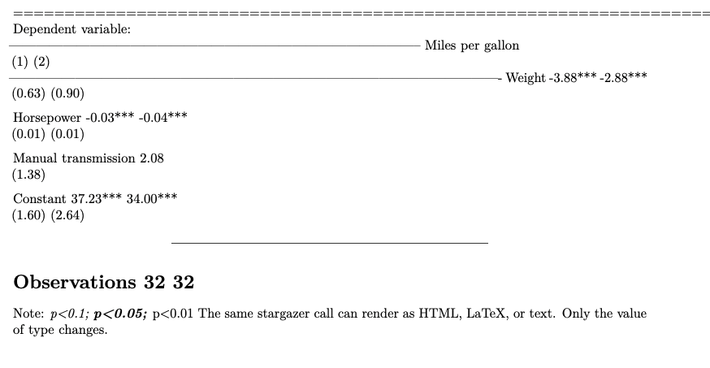
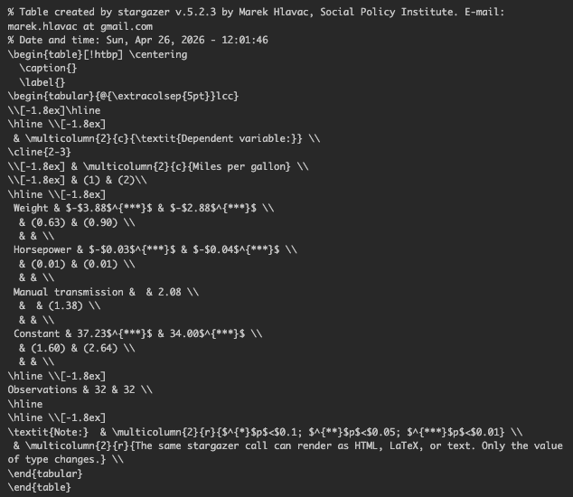

Flexible analysis output using Stargazer
The annoying part of using stargazer() in reports is not usually the model table itself. It is the type argument.
stargazer() asks you to choose a fixed output format:
model_1 <- lm(mpg ~ wt + hp, data = mtcars)
model_2 <- lm(mpg ~ wt + hp + am, data = mtcars)
stargazer(model_1, model_2, type = "text")
stargazer(model_1, model_2, type = "html")
stargazer(model_1, model_2, type = "latex")That choice sounds simple, but it becomes irritating as soon as you use the same analysis in more than one place. The value that looks right in one context can be wrong in another. Then you end up editing type = "text" to type = "latex", rendering the file, changing it back so you can inspect the table in RStudio, and repeating that cycle every time you switch how you view the output.
What people often do first
Before reaching for stargazer(), a lot of people compare models by printing several summary() outputs. That is a reasonable place to start. It is built into R, it is explicit, and it works well when you only have one model.
summary(model_1)
summary(model_2)If you have several models, you might put them in a named list and loop over them.
models <- list(
"Model 1" = model_1,
"Model 2" = model_2
)
lapply(models, summary)This is useful for checking results while you are working, but it is not a great reporting format. Each model prints separately, so comparing coefficients, standard errors, p-values, and sample sizes requires a lot of scrolling. The problem gets worse with larger model sets.
A regression table solves that comparison problem by putting the models side by side. That is the point where stargazer() becomes useful:
stargazer(model_1, model_2, type = "text")The table is easier to compare, but now you have a new problem: what should type be?
The hard-coded choice
Suppose you are working interactively in RStudio while also rendering a PDF report. You might start with plain text because it is readable in the console:
stargazer(model_1, model_2, type = "text")That is useful while you are developing the model. But when the same code is rendered to PDF, the table is treated like plain text instead of a LaTeX table.

type = "text" produces ugly output in a PDF document.So you change the argument to LaTeX:
stargazer(model_1, model_2, type = "latex")That fixes the PDF, but now the output is unpleasant when you run the chunk interactively in RStudio. Instead of seeing a readable table, you see the raw LaTeX code.

type = "latex" produces raw LaTeX output in the interactive RStudio environment.This is the pain point: there is no single hard-coded value that is pleasant everywhere. If you fix the PDF, you make interactive work worse. If you fix interactive work, you make the PDF worse.
The better pattern
Instead of hard-coding the string inside every stargazer() call, create a variable near the top of the document:
stargazer_type <- "text"Then use that object in every table:
stargazer(model_1, model_2, type = stargazer_type)The full solution is to set stargazer_type dynamically. Put the helper chunk at the top of the document, run everything above the table, and then leave the table code alone.
R Markdown helper
For an .Rmd file, paste this code into a code chunk near the top of your analysis file. It uses the output format listed in the YAML header. If the document is rendering to PDF, it uses LaTeX. If the document is rendering to HTML, it uses HTML. If you are running code outside a knitted document, it falls back to text.
if (!is.null(knitr::current_input())) {
output_formats <- rmarkdown::all_output_formats(knitr::current_input())
output_format <- if (length(output_formats) > 0) output_formats[1] else NULL
if (!is.null(output_format) && output_format == "pdf_document") {
stargazer_type <- "latex"
} else if (!is.null(output_format) && output_format == "html_document") {
stargazer_type <- "html"
} else {
stargazer_type <- "html"
}
} else {
stargazer_type <- "text"
}Quarto helper
For a Quarto .qmd file, paste this code into a code chunk near the top of your analysis file. It asks Quarto what Pandoc output format it is using, then chooses the matching stargazer() output type.
format <- tryCatch(
quarto::quarto_metadata$output_format$pandoc$to,
error = function(e) NULL
)
if (is.null(format)) {
stargazer_type <- "text"
} else if (format %in% c("html", "html4", "html5")) {
stargazer_type <- "html"
} else if (format %in% c("latex", "pdf")) {
stargazer_type <- "latex"
} else {
stargazer_type <- "html"
}Minimal reproducible example
The example below uses built-in mtcars data so that the only moving part is the table output.
library(stargazer)
library(glue)
model_1 <- lm(mpg ~ wt + hp, data = mtcars)
model_2 <- lm(mpg ~ wt + hp + am, data = mtcars)
stargazer(
model_1,
model_2,
dep.var.labels = "Miles per gallon",
covariate.labels = c("Weight", "Horsepower", "Manual transmission"),
notes = glue(
"The same stargazer call can render as HTML, LaTeX, or text. ",
"Only the value of type changes."
),
keep.stat = "n",
notes.append = TRUE,
digits = 2,
type = stargazer_type
)The point is not that stargazer_type is complicated. The point is that all of the annoying format-specific logic lives in one setup chunk. Once that chunk exists, every table can use the same pattern:
type = stargazer_type